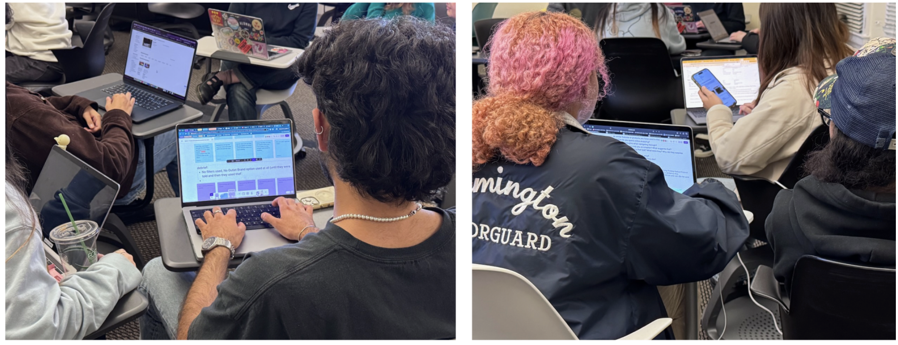

Ebay // E.B. Navigation Bot

More Intuitive Navigation System For Ebay
This project set out to improve eBay's navigation through in-depth user research and prototyping — understanding where people struggled to find and purchase items, then reimagining that search as something more intuitive and trustworthy.
The direction we landed on: AI-assisted search with image + text input, auto-complete prompts, and quick action buttons that cut friction and build confidence.
Too Much Hassle To Browse

Journey map: confidence up front, frustration deeper in
eBay's massive marketplace makes it hard to quickly find what you need. Cluttered results and unclear pathways lead to repeat searches, missed items, or users giving up on the platform entirely.
A "Smart Navigation Bot"
Research surfaced a clear opportunity for AI to simplify the experience: surface key details first, support short prompts, enable image + text search, and add quick action buttons — all bundled into a bot we called E.B. It's built to make shopping faster, more intuitive, and more trustworthy.
User Journey Of Online Shoppers
Testing with a non-eBay user, we mapped their goals, expectations, and challenges while navigating the platform. eBay's homepage first built confidence with its range of products — but frustration set in fast as poor UI and confusing navigation got in the way.

Journey map: confidence up front, frustration deeper in
Watching Younger Users Hit The Same Walls
We ran in-person usability tests with five participants aged 18–21, using the Thinking Out Loud protocol across tasks like browsing the homepage, searching for a used TV under $1,000, applying filters, and exploring Brand Outlets — on both desktop and mobile.

Usability session — desktop task walkthrough
Interviews & Surveys
A companion survey on shopping habits, pain points, and navigation behavior helped us see how people rate their overall eBay experience and which tools they actually rely on to find things.

Survey questionnaire and response breakdown
E.B. — AI-based navigation bot
The Gap: AI For Sellers, Not For Buyers
E.B. is an AI-powered navigation tool built to assist with filters and search results. Our research found eBay's existing AI tools are aimed almost entirely at sellers — listing help, descriptions, promotion. Nothing was built to help buyers actually find what they're looking for. That gap became E.B.'s reason to exist.

Synthesizing how users want AI to search, and how much they trust it
"Ebay's AI helps sellers list, nobody's built one to help buyers find."
Ask, Suggest, Arrive

E.B. appears as a tiny icon in the bottom right of the site, which opens into a page just like any normal chatbot.

E.B. then suggests the most-asked question, but the user can also type a very specific navigation command or request.

Lastly, E.B. takes you to a specific page based on your question — searching for items, tracking orders, or reaching customer service.
Testing The Appetite For AI First
We ran a user concept test with people open to AI and its role in navigation, using a structured questionnaire across four areas:
- General questions about AI usage
- Questions specific to navigation on the eBay platform
- Post-concept-test prompt input questions
- Reflective questions about AI and its use in navigation
What E.B. Is Built To Do
- Provide easy, fast search results
- Take in user commands — price range, item, shipping preferences
- Attach links and images to match product requests
- Automatically apply relevant filters
- Deliver follow-up responses and personalized recommendations
E.B. was concept-tested with the same participants from our earlier sessions, surfacing a few remaining pain points and concerns marked for the next round of development.
State up front that results are trustworthy: "I don't hide listings or promote paid products — your results are based on relevance and seller trust."
Prioritize key information — price, condition, shipping — first, with an option to expand for more detail.